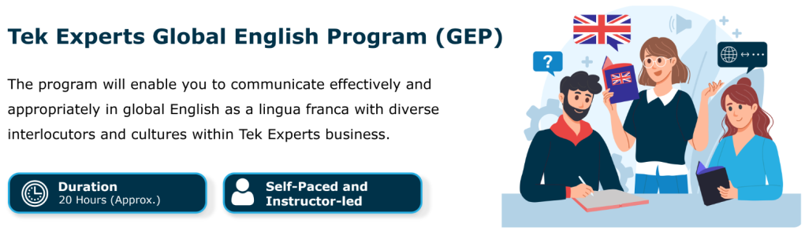
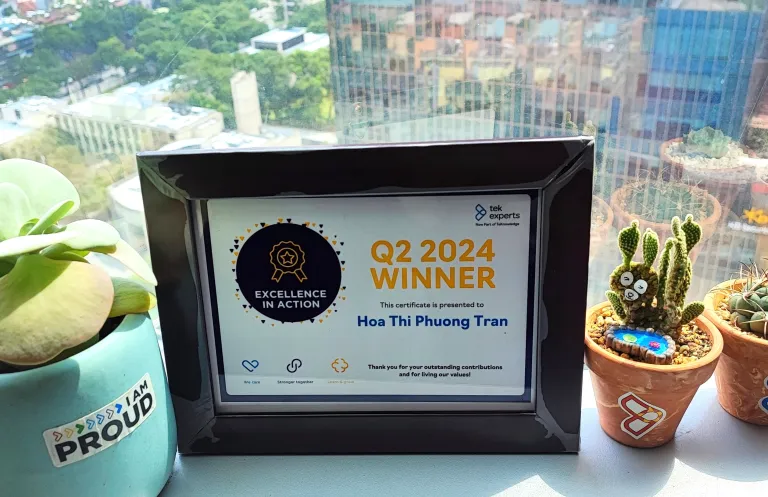
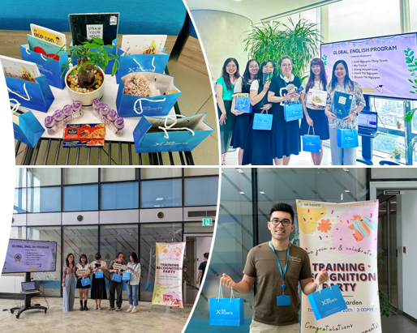
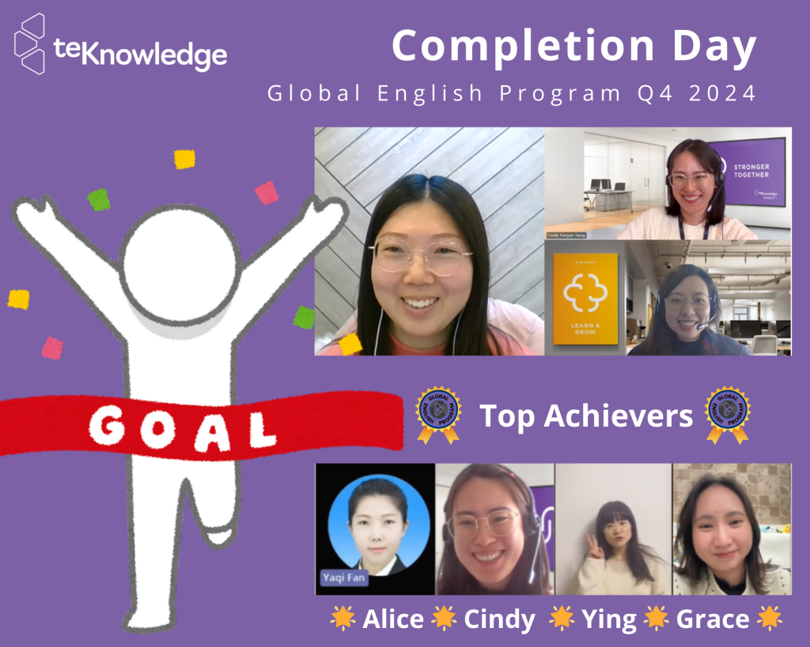

A standardized English program for customer support teams across 6 sites

Situation
Customer support teams across 6 sites lacked a standardized English program, so language proficiency was not consistent.
Task
Build a blended English program framework to maintain the business English skills required of new team members (tenure under 7 months). It also needed to support accountability, effective communication and task prioritization.
Action
- Researched existing materials and benchmarked skill levels.
- Worked with training managers and language and soft skills trainers across sites to align.
- Designed a blended program: 16 hours of self-paced learning on the learning platform, plus 4 hours of instructor-led practice (online or in person).
- Built the self-paced modules: CARE communication skills, advanced English, and practical applications (speech, proposal writing).
- Created a delivery playbook so trainers prepare, deliver and assess the program the same way. This saved time and resources.
- Ran train-the-trainer sessions for the Costa Rican training team.
Result and impact
I piloted 2 cohorts in Vietnam (21 employees). Completion rates were 100% and 95%, the survey score was 4.9/5, and skills improved by 55% on average. Participants and their direct managers gave positive feedback, and QA scores showed an increasing trend before and after training.
The next cohort, in China, gave a 5/5 survey score, which shows strong engagement and satisfaction across sites.
I later received the Q2 2024 Excellence in Action award for my contribution to this learning initiative.



Participant feedback
I wanted to express my gratitude for Flora's training course. It provided me with a valuable opportunity to learn business English and gain a deeper understanding of email etiquette and writing tips.
Flora has been incredibly helpful, offering amazing support. She provides useful links and tips that have greatly benefited me. Her enthusiasm and knowledge make her a true role model.
Your dedication and passion for teaching are appreciated, and they greatly contributed to making this course an enriching experience.
I appreciate my English instructor's engaging and effective teaching style. I also value her adaptability and encouragement, which motivate me to do my best.
Digital learning sample
A short preview of one of the self-paced modules (16 hours in total) I designed for this program, built with Articulate Storyline.